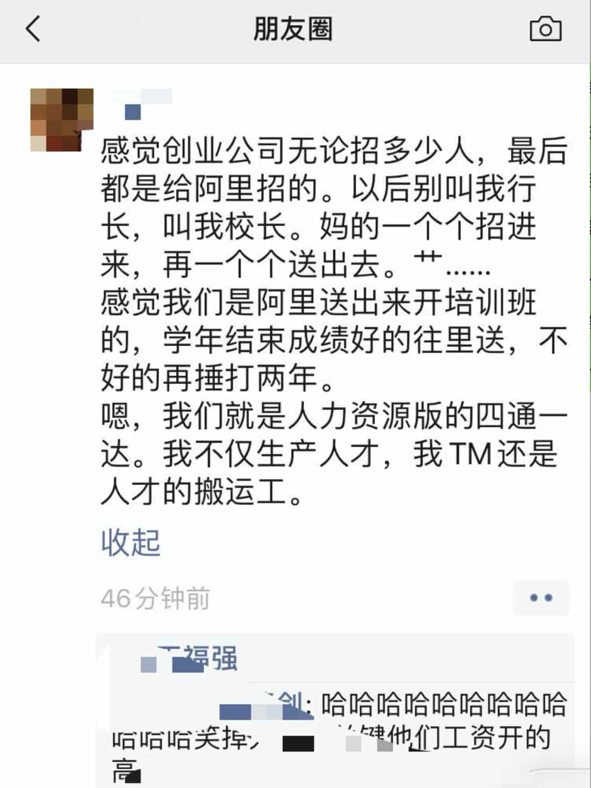
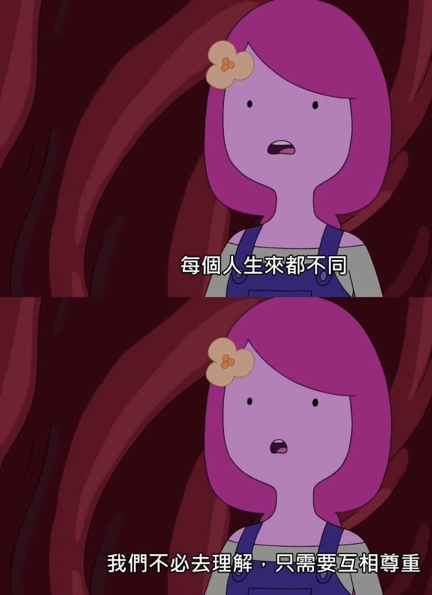
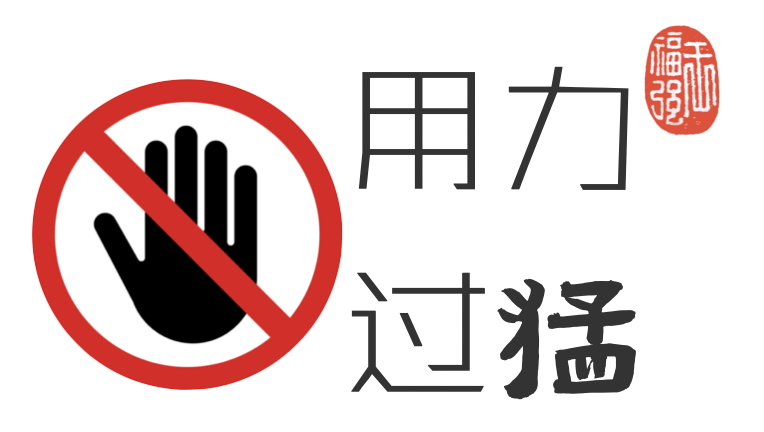

人才的轮回 - 大中小厂的人才纷争
王福强
昨天晚上参加了腾讯TVP主办的一个活动，期间曾宪杰（华黎）分享了他的一些宝贵经验和体会，有句话我很喜欢“天道好轮回”，哈哈，说的是什么事儿呢？ 其实就是，当华黎从淘宝出来到蘑菇街甚至现在自己创业的时候， 发现自己辛辛苦苦培养的人，要么跳槽了，要么被大厂挖墙脚了， 所以，有一段时间很痛苦，后来想明白了，当他在淘宝的时候，其实扮演的就是挖墙脚的人那， 所以，一句感叹“天道好轮回， 苍天绕过谁”也就释然了。
说来也巧，高行长前几天在朋友圈也在嘲讽自己同样的事情，自己创业公司辛辛苦苦培养的人，都跑阿里了， 所以，现在不应该叫高行长，应该叫高校长才对：

类似案例还挺多的， 也让我不免联想起前几年，有位兄弟也是从阿里出来创业， 有天跟我说，“tmd我发现一个人培养一两年，成手了之后，就都跑阿里了， tnnd， 我现在也想通了， 只要这个人在我这里干满三年能留下东西，爱走就走吧…”
其实吧，像他们还算好的， 毕竟都在大厂呆过，也都大中小厂干过， 天道再怎么轮回，自己起码雨露均沾了，最伤心的其实是那些从开始就创业， 要把一家小厂做成大厂，但依然还在路上的CEO们，他们根本没法靠“轮回”来弥补自己的人才创伤， 他们才是被这个“错配”市场伤害最深、压力最大的一群人，而越是压力大， 往往越是动作变形，对人才就越苛刻， 然后就会发现人才出走更多，落个黯然神伤之后再去反思，但巨大的沉没成本已经造就，能继续上路当然幸运，而很多创业公司可能也会因此嘎然而止…（当然，嘎然而止还是业务上问题多些）
每一个带队的人其实都会经历一次人才跳槽造成的心理创伤（或者说震撼），经历过了，后面也就淡然、释然了，毕竟，“人往高处走，水往低处流”， 老话说的很明白了。如果手下有兄弟跟你说，他拿到一个offer，翻倍薪资，你要死命的挽留吗？ 还是算了吧，不要挡人财路，每个人都有每个人的打算，每个人都有每个人的追求，江湖儿女，来日好相见啊～
我为啥臭不要脸的说自己是“经历了大中小企业完整生命周期”的持续创业者呢？ 就是因为我大中小厂都折腾了一圈，发现很多东西都通透了， 甚至于包括阿里这个大盘子， 我在里面不清楚怎么回事， 出来了不清楚怎么回事，等都经历过了再回头看，😯，原来是这么回事！
在人才问题上，大中小厂也遵循现实世界第一规律： “错配”， 越是小厂，理想情况下越需要有好的人才来做大， 但现实却是没钱没资源， 好的人才不会看得上、更不会来，这个阶段不是你去找人才，而是人家来找你，你现在能找到的人，其实就是你能找到的最好的人，最合适的人（虽然你可能觉得人家很差，问题是，牛逼了老子干嘛来这儿？）； 大厂不一样，大家印象里可能觉得大厂已经人才济济了，但实际上大厂要的还远远不够， 我要锦上添花，我要放大效应，我要继续做大做强，老子盘子大，所以我就可以广收，人才池子就那么大怎么办？ 下沉啊，所以，你懂的， 市场需求+人才自身追求， 一拍即合， 也就成为了人才市场的主旋律。

我觉得各位创业公司的CEO们也没必要恼火，虽然从组织层级上或者分工关系上可能有层级差异，但人与人之间在人格上还是要有相互尊重的， 你理解了TA的需求， 也就了解了解法，如果你手里没有解药，那放手其实也是很自然的事情，你需要思考的只是“人在你这里的时候，你给予TA什么，同时又需要TA留下什么”就好了。

「为AI疯狂」星球上，扶墙老师正在和朋友们讨论有趣的AI话题，你要不要⼀起来呀？^-^
这里
- 不但有及时新鲜的AI资讯和深度探讨
- 还分享AI工具、产品方法和商业机会
- 更有体系化精品付费内容等着你，加入星球(https://t.zsxq.com/0dI3ZA0sL) 即可免费领取。(加入之后一定记得看置顶消息呀！)

存量的时代，省钱就是赚钱。
在增量的时代，省钱其实是亏钱。
避坑儿是省钱的一种形式，更是真正聪明人的选择！
弯路虽然也是路，但还是能少走就少走，背后都是高昂的试错成本。
订阅「福报」，少踩坑，少走弯路，多走一步，就是不一样的胜率！